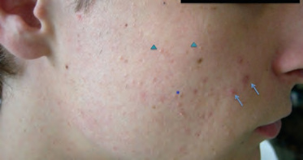
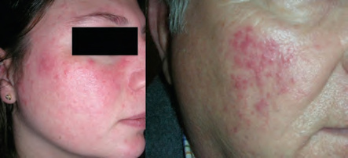
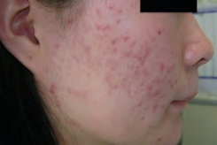
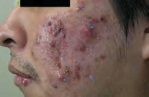
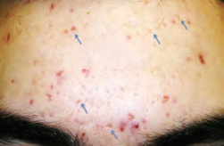
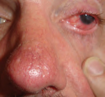

- Comedones abiertos o cerrados: piensa primero en acné vulgar.
- Eritema fijo o flushing centrofacial sin comedones: piensa en rosácea.
- Riesgo de cicatriz o afectación ocular: no retrases la escalada.
Busca primero comedones, después distribuye el resto
Pápulas y pústulas aparecen en ambos procesos. El comedón, la afectación de tronco y la cicatriz favorecen acné; las telangiectasias, el flushing y los síntomas oculares favorecen rosácea.
| Rasgo | Acné vulgar | Rosácea |
|---|---|---|
| Lesión guía | Comedón abierto o cerrado; también pápula, pústula, nódulo y quiste. | Eritema centrofacial persistente o flushing; pápulas y pústulas sin comedones. |
| Distribución | Cara, pecho, espalda y hombros. | Mejillas, nariz, mentón y frente; puede afectar los ojos. |
| Secuelas | Cicatriz atrófica o hipertrófica e hiperpigmentación posinflamatoria. | Telangiectasias persistentes y cambios fimatosos; no deja la cicatriz típica del acné. |
| Desencadenantes | Oclusión, cosméticos comedogénicos, algunos fármacos y contexto hormonal. | Sol, calor, bebidas calientes, alcohol, picantes y otros estímulos individuales. |

Los puntos negros y los relieves blanquecinos cerrados delatan obstrucción folicular.
Recopilación Dermatología 2025 · pág. 20.
Eritema-telangiectasias y forma papulopustulosa; ninguna muestra comedones.
Recopilación Dermatología 2025 · pág. 23.Gradúa por lesión dominante, extensión y riesgo de cicatriz
Contar lesiones con precisión milimétrica aporta menos que identificar nódulos, cicatrices, afectación troncular y repercusión emocional. La duración también importa: inflamación mantenida deja secuelas.
Sin nódulos ni cicatrices; suele responder a tratamiento tópico bien aplicado.
Puede afectar tronco y necesita combinación tópica; valorar antibiótico oral si es inflamatorio extenso.
Alto riesgo de cicatriz: derivación dermatológica y no encadenar tratamientos ineficaces.
Pregunta por evitación social, ánimo y manipulación; la gravedad vivida también guía el plan.

La inflamación persistente y el retraso terapéutico aumentan la probabilidad de cicatriz.
Recopilación Dermatología 2025 · pág. 20.
La profundidad y las cicatrices cambian el circuito más que el número total de lesiones.
Recopilación Dermatología 2025 · pág. 20.
Primero controla el acné activo; después se planifica el tratamiento de la cicatriz.
Recopilación Dermatología 2025 · pág. 20.El primer ciclo dura 12 semanas; la mejoría tarda 6–8
Explica desde el inicio cómo aplicar, qué irritación esperar y cuándo revisar. La combinación correcta fracasa con frecuencia por abandono precoz, exceso de producto o aplicación solo sobre cada grano.
Limpieza suave tipo syndet dos veces al día, cosmética no comedogénica y no manipular lesiones. Aplica el tratamiento en toda el área acneica, no solo de forma puntual.
Adapaleno 0,1 % + peróxido de benzoilo 2,5 % por la noche es una opción de primera línea. Para reducir irritación, empieza noches alternas o contacto corto y aumenta según tolerancia.
Doxiciclina o limeciclina junto a tratamiento tópico no antibiótico durante un curso limitado. Revisa a las 12 semanas y evita prolongar antibióticos por inercia.
Indicada en formas graves o resistentes bajo control especializado, con prevención de embarazo y vigilancia de seguridad específica.
Favorece resistencias y es menos sólido que una combinación apropiada.
Debe acompañarse de un tópico no antibiótico, habitualmente peróxido de benzoilo o retinoide según tolerancia.
Los retinoides tópicos y sistémicos están contraindicados; revisa posibilidad de embarazo antes de prescribir.
No impongas dietas restrictivas: no hay evidencia suficiente para una dieta específica como tratamiento del acné.
Una cantidad aproximada del tamaño de un guisante suele cubrir toda la cara. El peróxido de benzoilo puede decolorar tejidos; el retinoide irrita más sobre piel húmeda. Hidratante y fotoprotector no comedogénicos forman parte del tratamiento.
Trata el fenotipo que molesta, no una etiqueta única
Eritema persistente, flushing, telangiectasias, pápulas/pústulas, síntomas oculares y cambios fimatosos pueden combinarse. El plan se adapta al componente dominante.
SPF 30–50 de amplio espectro, limpiador suave e hidratación. Identifica desencadenantes personales sin prohibiciones universales.
Elige por tolerancia, disponibilidad y preferencia. Si es extensa o resistente, valorar doxiciclina a dosis antiinflamatoria.
Los tópicos vasoconstrictores pueden reducir eritema transitoriamente; láser o luz se valoran en unidades con experiencia.
El engrosamiento establecido, especialmente rinofima, suele requerir procedimientos dermatológicos o quirúrgicos.
Pregunta por arenilla, sequedad, fotofobia y visión
La rosácea ocular puede preceder o acompañar a la piel. Blefaritis y disfunción de glándulas de Meibomio son frecuentes; dolor ocular, fotofobia intensa, ojo rojo unilateral o pérdida visual requieren valoración oftalmológica rápida.

La hiperemia y el borde palpebral obligan a preguntar por función visual y dolor, no solo por estética facial.
Recopilación Dermatología 2025 · pág. 23.Cuidados iniciales si no hay alarma
- Higiene palpebral y compresas tibias.
- Lágrima artificial sin conservantes si sequedad.
- Revisar lentes de contacto y cosméticos irritantes.
- Coordinar tratamiento sistémico con Dermatología/Oftalmología si persiste.
Compara fotografías y cambia una variable cada vez
Lesión dominante, áreas, cicatriz, eritema persistente y repercusión emocional.
Frecuencia, cantidad, cosmética acompañante e irritación antes de declarar fracaso.
Si mejora, reduce antibiótico y mantiene el tópico útil; si no, cambia de estrategia o deriva.
Nódulos nuevos, cicatriz progresiva, acne fulminans, embarazo con medicación contraindicada o síntomas oculares de alarma.
Referencias utilizadas
- NICE. Acne vulgaris: management (NG198), actualizada en 2026.
- British Association of Dermatologists. Guidelines for the management of people with rosacea 2021.
- Actualización Dermatología 2025 - Recopilación, capítulo 3. Fuente secundaria y procedencia de las fotografías.